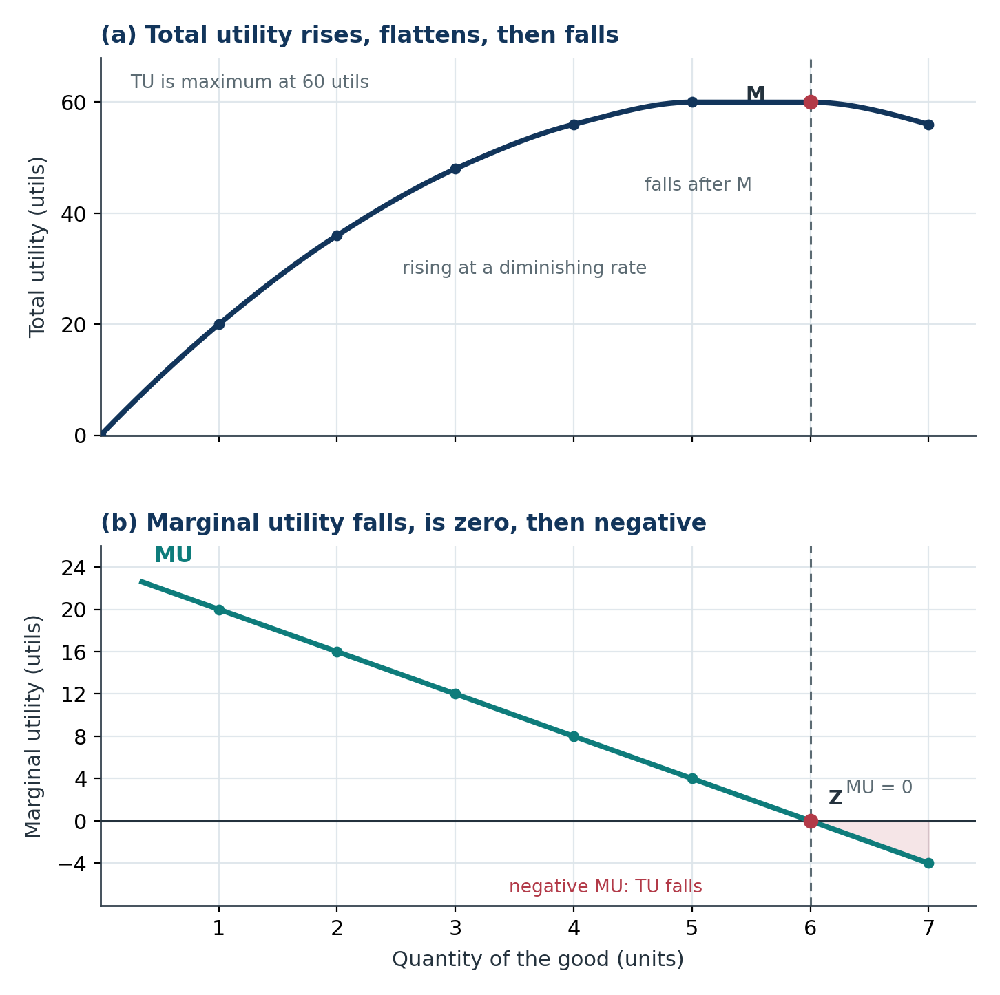
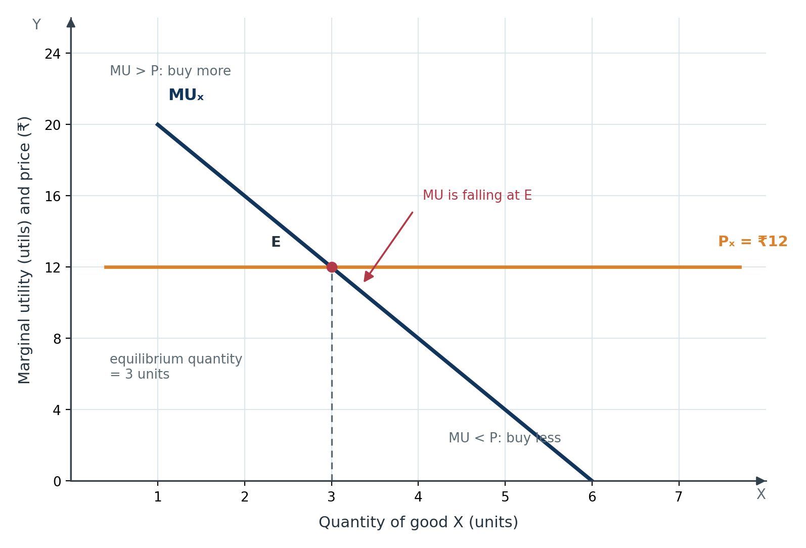
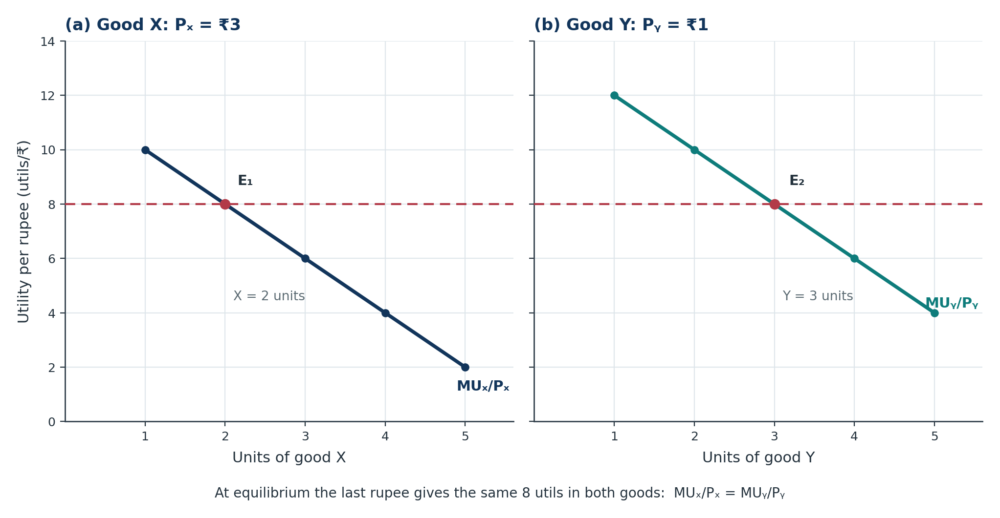
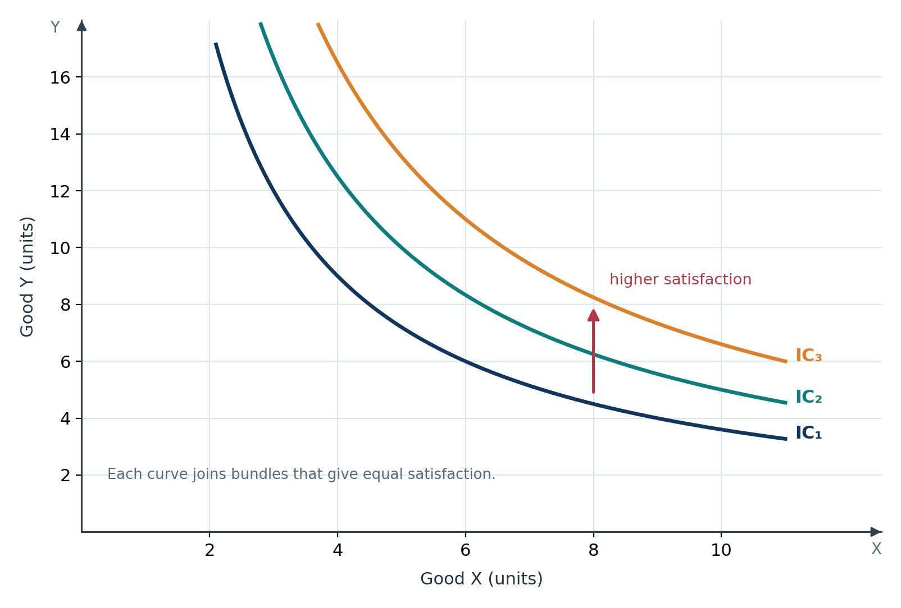
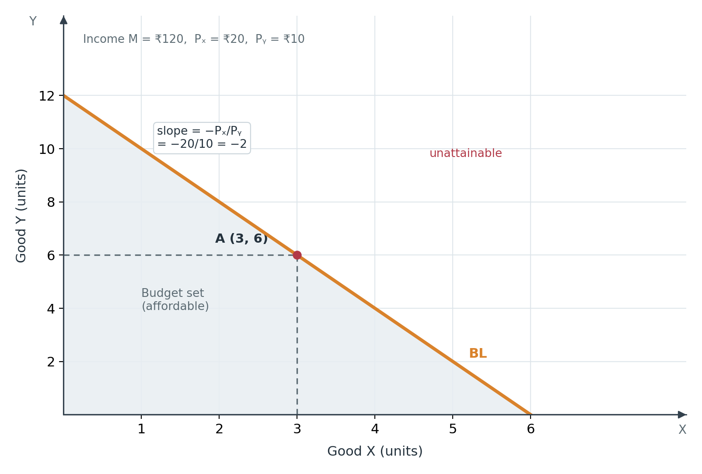
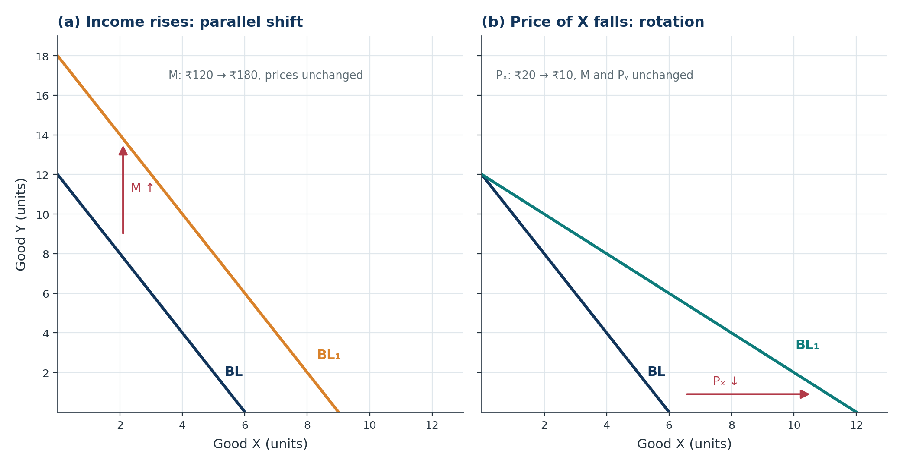
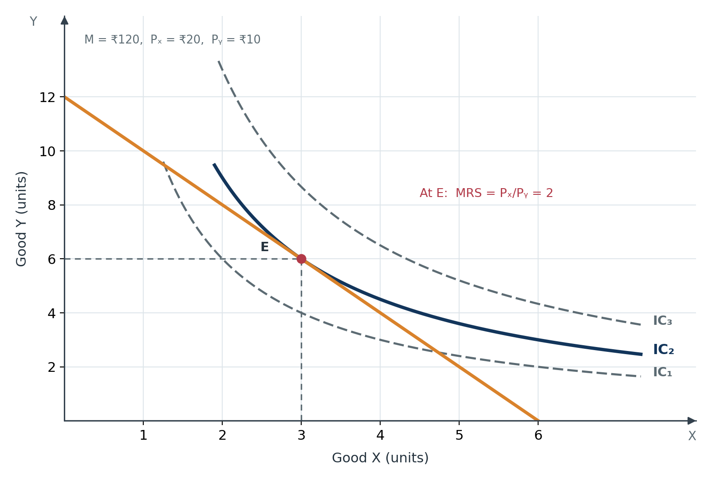

Microeconomics · Class 11Chapter 2Notes + quick revision
Consumer's Equilibrium
Why does a consumer stop where she does? Because at that bundle the last rupee spent on every good buys the same satisfaction — so no reshuffle can improve things. This chapter proves that idea twice, once with measurable utility and once with indifference curves, and shows the two are the same condition in different clothes.
Chapter at a glance
Nine stops: from the consumer's limited budget to the tangency point where the indifference curve just kisses the budget line. Tap a card to jump straight in.
The one-line idea: a consumer with limited income reaches equilibrium when the last rupee spent on each good yields the same marginal satisfaction, so no reallocation can raise total satisfaction.
The core question: how much of each good should a consumer buy so that no reallocation of spending can increase total satisfaction?
Key Terms — Read These First
The words that carry marks. Read them once now, then test yourself after the chapter.
- Consumer equilibrium
- The bundle at which a consumer, given income and prices, gets maximum satisfaction and has no tendency to change quantities.
- Utility
- The want-satisfying power of a commodity; satisfaction, actual or expected, from consuming it.
- Cardinal utility
- The approach that treats utility as measurable in utils, associated with Alfred Marshall.
- Ordinal utility
- The approach that only ranks bundles, associated with Hicks and Allen; its tool is the indifference curve.
- Total utility (TU)
- The total satisfaction from consuming all units of a commodity in a given period.
- Marginal utility (MU)
- The addition to total utility from consuming one more unit: MUn = TUn − TUn−1.
- Law of diminishing marginal utility
- Other things equal, successive units consumed continuously give smaller and smaller marginal utility.
- Point of satiety
- The quantity at which MU = 0 and TU is maximum; beyond it, MU is negative and TU falls.
- Law of equi-marginal utility
- A consumer maximises satisfaction when the marginal utility of the last rupee spent on each good is equal.
- Utility per rupee
- MU ÷ price; the satisfaction obtained from the last rupee spent on a good.
- Indifference curve (IC)
- The locus of all combinations of two goods that give the consumer the same level of satisfaction.
- Indifference map
- A family of indifference curves representing a consumer's preferences over all bundles.
- Marginal rate of substitution (MRS)
- The rate at which a consumer gives up one good for one more unit of another, satisfaction unchanged.
- Diminishing MRS
- As X rises, the consumer gives up less and less Y for another X; this makes the IC convex.
- Budget line
- All combinations of two goods that a consumer can buy by spending the entire income at given prices.
- Budget set
- All combinations a consumer can afford: PxX + PyY ≤ M.
- Price ratio
- Px/Py, the market rate at which X exchanges for Y; the absolute slope of the budget line.
- Tangency condition
- At equilibrium the IC touches the budget line, so MRSxy = Px/Py.
- Real income
- The purchasing power of money income; a price fall raises it even when money income is unchanged.
- Monotonic preferences
- A consumer prefers a bundle with more of at least one good and no less of the other.
- Gossen's first law
- Another name for the law of diminishing marginal utility.
- Gossen's second law
- Another name for the law of equi-marginal utility.
The Consumer's Problem and Utility
The idea of this section. Wants are unlimited, income is limited and goods have prices. Consumer equilibrium is the bundle where the consumer has done the best she can with that limited income — not a bundle where every want is satisfied.
1.1 The consumer's problem
Definition. A consumer is a person or household that buys goods and services to satisfy wants. Consumer's equilibrium is a situation in which the consumer, given income and prices, obtains maximum total satisfaction and has no tendency to change the quantities purchased.
Three facts create the problem: wants are unlimited, income is limited, and every good has a price. More of one good therefore means less of another. Equilibrium does not mean all wants are satisfied; it means shifting a rupee between goods cannot raise satisfaction.
Exam pointer. “Maximum satisfaction” and “no tendency to change” are both parts of the definition. A bundle that merely lies on the budget line is not necessarily an equilibrium.
1.2 Utility is satisfaction, not usefulness
Definition. Utility is the want-satisfying power of a commodity — the satisfaction, actual or expected, from consuming it.
Utility is subjective: it differs from person to person, place to place and time to time. It is not the same as usefulness, because a harmful good can satisfy a strong want. Liquor has high utility for an alcoholic even though it is harmful.
Example. A student values a plate of samosas at 30 utils and a glass of juice at 20 utils, so the samosas satisfy a stronger want for her. Another student may reverse the numbers; utility is not a property of the food alone.
1.3 Cardinal and ordinal approaches
The cardinal utility approach (Alfred Marshall) assumes utility can be measured in utils, imaginary psychological units. It compares marginal utility with price.
The ordinal utility approach (J. R. Hicks and R. G. D. Allen) assumes only that a consumer can rank bundles: she can say A is preferred to B without saying by how many utils. Its main tool is the indifference curve.
| Basis | Cardinal | Ordinal |
|---|---|---|
| Utility | Measured in utils | Ranked, not measured |
| Main tools | TU, MU, price | Indifference curve, budget line |
| Main economists | Alfred Marshall | Hicks and Allen |
| Realism | Less realistic | More realistic |
Big picture. Both approaches answer the same question — how a consumer chooses — but the cardinal route measures satisfaction, while the ordinal route only ranks bundles.
- Q1. Define consumer equilibrium. Why does it not require all wants to be satisfied?
- Q2. Why is utility not the same as usefulness? If 1 util = ₹0.50, express 30 utils in money.
- Q3. Who are the main economists behind the cardinal and ordinal approaches?
Show answers
- It is the bundle that maximises satisfaction given income and prices, with no tendency to change. Income is limited, so wants remain unsatisfied even at equilibrium.
- Utility is want-satisfying power, which can be positive even for a harmful good; liquor satisfies a strong want for an alcoholic although it is not useful. 30 utils × ₹0.50 = ₹15.
- Cardinal: Alfred Marshall. Ordinal: J. R. Hicks and R. G. D. Allen.
TU, MU and the Law of Diminishing Marginal Utility
The idea of this section. Total utility is the running total; marginal utility is the last addition to it. The whole chapter rests on one pattern: as consumption continues, each extra unit adds less satisfaction than the one before.
2.1 Total utility and marginal utility
Definition. Total utility (TU) is the total satisfaction from consuming all units of a commodity in a given period. Marginal utility (MU) is the addition to total utility from consuming one more unit.
TUn is total utility from n units, MUi is the marginal utility of the i-th unit, and ΔQ is the change in quantity. MU is the slope of the TU curve: a steep TU means high MU, and a flat TU means zero MU.
| Quantity | MU (utils) | TU (utils) |
|---|---|---|
| 0 | — | 0 |
| 1 | 20 | 20 |
| 2 | 16 | 36 |
| 3 | 12 | 48 |
| 4 | 8 | 56 |
| 5 | 4 | 60 |
| 6 | 0 | 60 |
Pointer. MU is not “the utility of the last unit” in isolation; it is the addition to total utility. That is why MU at 1 unit equals 20 and MU at 2 units equals 16, while TU at 2 units is 36.
2.2 How TU and MU move together
| MU | TU | Meaning |
|---|---|---|
| Positive | Rising | Each extra unit adds satisfaction. |
| Zero | Maximum | The extra unit adds nothing. |
| Negative | Falling | The extra unit reduces satisfaction (disutility). |
The maximum point of TU is the point of satiety. In the schedule, TU peaks at 60 utils when MU = 0 at 6 units; a seventh unit would make MU negative and TU would fall.

What to notice. MU crosses zero where TU peaks. Do not say “TU is maximum when MU is maximum”; that confuses the level with the change.
2.3 The law of diminishing marginal utility
Law of diminishing marginal utility (DMU). Other things remaining equal, as a consumer consumes more and more units of a commodity continuously, the marginal utility of each successive unit goes on decreasing.
It was stated by H. H. Gossen, so it is also called Gossen's first law of consumption. The first glass of water is intensely satisfying; the fourth is unwelcome. The water has not changed — the want has.
Why “other things equal” matters. If the consumer becomes thirstier or the good improves, the whole MU schedule can shift. The law describes successive units of the same good under unchanged tastes and circumstances.
2.4 Assumptions of the law
| Assumption | Why it is needed |
|---|---|
| Cardinal measurement | MU must be measurable in utils. |
| Measurement in money | MU and price need a common unit; MU of money is assumed constant. |
| Rational consumer | The consumer aims to maximise satisfaction. |
| Homogeneous units | Every unit is identical in size and quality. |
| Continuous consumption | Units are consumed one after another, without long gaps. |
| Reasonable quantity | Normal units are compared; a spoonful may break the pattern. |
2.5 Exceptions and limitations
- Hobbies and collector's items. The tenth stamp may be valued more than the first because it completes a set.
- Knowledge and music. Interest can grow with familiarity, so later units may give more utility.
- Money and wealth. A miser may value each additional rupee more.
- Intoxicants. For an addict, additional doses may give increasing utility in the short run.
These are exceptions, not refutations: for ordinary goods, diminishing MU is a strong pattern. The cardinal approach also has three limitations: utility cannot be measured cardinally; interpersonal comparisons of utils are impossible; and the MU of money is not really constant.
- Q1. Define MU and state its relationship with TU.
- Q2. TU from 1 to 6 units is 40, 70, 90, 100, 100, 90. Find MU for each unit and where TU is maximum.
- Q3. Why does TU rise even when MU is falling?
Show answers
- MU is the addition to TU from one more unit: MUn = TUn − TUn−1. Positive MU raises TU, zero MU maximises it, and negative MU lowers it.
- MU = 40, 30, 20, 10, 0, −10. TU is maximum at 5 units, where MU = 0.
- Each extra unit adds less, but while MU is positive TU still rises — only more slowly.
Equilibrium with a Single Commodity
The idea of this section. When the consumer spends on only one good, she keeps buying until the satisfaction from the last unit equals its price — and stops only where marginal utility is falling.
3.1 The condition
Assume the consumer spends her entire income on good X at a fixed price; she is a price taker. MU is in utils and price in rupees, so they must be converted to a common unit.
In utility terms.
In money terms.
MUm is the marginal utility of one rupee. When one rupee is worth 1 util, both forms reduce to MUx = Px. There are two conditions:
- MUx = Px (in matching units).
- MU must be falling at that quantity. Equality alone is not enough: if MU were rising, buying more would always pay.
3.2 A schedule
Let the price of X be ₹12 and one rupee be worth 1 util.
| Quantity | MUx (utils) | Price (₹) | MUx − Px | Decision |
|---|---|---|---|---|
| 1 | 20 | 12 | +8 | Buy more |
| 2 | 16 | 12 | +4 | Buy more |
| 3 | 12 | 12 | 0 | Equilibrium |
| 4 | 8 | 12 | −4 | Buy less |
| 5 | 4 | 12 | −8 | Buy less |
| 6 | 0 | 12 | −12 | Buy less |
At 3 units MU equals price and MU is falling. Buying the third unit adds 12 utils for ₹12, so it is worth buying; buying the fourth adds only 8 utils for ₹12, so she stops.
3.3 The graph and why equilibrium is stable

What to notice. Left of E, MU > P, so she buys more; right of E, MU < P, so she buys less. At E, MU = P and MU is falling. That is why the equilibrium is stable: any move away creates a gap that pulls her back.
Exam caution. A point where MU = P but MU is rising is not stable. With rising MU, one more unit is worth more than its price, so the consumer keeps buying.
- Q1. State the two conditions for single-commodity equilibrium.
- Q2. Using the schedule, find equilibrium if the price rises to ₹16. What is TU there?
- Q3. Why is a point with MU = price but rising MU not an equilibrium?
Show answers
- (i) MUx = Px in matching units; (ii) MU is falling at that quantity.
- At ₹16, MU = 16 at 2 units, so equilibrium is 2 units; TU = 36 utils.
- With rising MU, one more unit gives MU above price, so she keeps buying; equality is not a resting point.
Equilibrium with Two Commodities
The idea of this section. With two goods, the consumer compares not total utilities but utility per rupee. She moves each rupee to the good where it buys more satisfaction, until the last rupee is equally productive everywhere.
4.1 The law of equi-marginal utility
Definition. The law of equi-marginal utility says a consumer maximises satisfaction by allocating limited income so that the marginal utility of the last rupee spent on each good is equal.
It is also called the law of substitution, the law of maximum satisfaction, and Gossen's second law.
Each ratio is utility per rupee. At equilibrium: the ratios are equal; MU of each good is falling; and the budget is fully spent, PxX + PyY = M.
4.2 The intuition
Think of each rupee as a worker. If the last rupee on X yields more than the last rupee on Y, move a rupee from Y to X. MUx falls and MUy rises, so the ratios converge. When they are equal, no transfer can raise total utility: the gain on X equals the loss on Y.
The condition equalises utility per rupee, not expenditure. A consumer may spend far more on food than on salt, yet the last rupee on each can yield the same satisfaction.
Example. If MUx/Px = 12 and MUy/Py = 8, the last rupee on X yields 4 utils more. She buys more X and less Y; MUx falls and MUy rises until the ratios meet.
4.3 A worked table
Let Px = ₹3, Py = ₹1, and income M = ₹9.
| Units | MUx | MUx/Px | MUy | MUy/Py |
|---|---|---|---|---|
| 1 | 30 | 10 | 12 | 12 |
| 2 | 24 | 8 | 10 | 10 |
| 3 | 18 | 6 | 8 | 8 |
| 4 | 12 | 4 | 6 | 6 |
| 5 | 6 | 2 | 4 | 4 |
At X = 2, MUx/Px = 24/3 = 8. At Y = 3, MUy/Py = 8/1 = 8. The ratios are equal. Check the budget: 3(2) + 1(3) = ₹9. Total utility = (30 + 24) + (12 + 10 + 8) = 54 + 30 = 84 utils.

What to notice. The dashed line at 8 is the common value. The consumer does not equalise MUx and MUy; she equalises their ratios to price.
- Q1. State the law of equi-marginal utility and its conditions.
- Q2. Using the worked table, show that X = 2, Y = 3 is equilibrium, and find total utility.
- Q3. If MUx/Px > MUy/Py, why does buying more X restore equilibrium?
Show answers
- MUx/Px = MUy/Py; MU must be falling for each good; and income must be fully spent.
- Ratios: 24/3 = 8 and 8/1 = 8. Cost = 3(2) + 1(3) = ₹9. TU = 54 + 30 = 84 utils.
- More X lowers MUx/Px; less Y raises MUy/Py. The ratios converge, and further switching then lowers utility.
Ordinal Utility and Indifference Curves
The idea of this section. The ordinal approach drops the imaginary meter. It asks only that the consumer rank bundles, and draws a curve through every bundle that ranks equally.
5.1 The indifference curve
Definition. An indifference curve (IC) is the locus of all combinations of two goods that give a consumer the same level of satisfaction. The consumer is indifferent between any two points on it; it is also called an equal-satisfaction or iso-utility curve.
| Combination | Good X | Good Y |
|---|---|---|
| A | 1 | 10 |
| B | 2 | 7 |
| C | 3 | 5 |
| D | 4 | 4 |
All four bundles give equal satisfaction. From A to B the consumer gives up 3Y for 1X; from B to C, 2Y; from C to D, 1Y. The willingness to sacrifice Y for X is falling.
An indifference map is a family of ICs representing preferences over all bundles. A higher curve means higher satisfaction.

What to notice. IC3 is preferred to IC2, and IC2 to IC1. The arrow is the direction of higher satisfaction, not a movement along one curve.
5.2 Assumptions
| Assumption | Meaning |
|---|---|
| Two goods | Income is spent on X and Y at given prices. |
| Ordinal utility | The consumer can rank bundles; no utils are needed. |
| Rationality | The consumer aims at the highest attainable IC. |
| Monotonic preferences | More of one good, with no less of the other, is preferred. |
| Diminishing MRS | As X rises, the consumer gives up less and less Y for another X. |
5.3 Properties of indifference curves
- Downward sloping. More X with the same Y would raise satisfaction, so Y must fall to keep satisfaction constant.
- Convex to the origin. The slope flattens as X rises because MRS diminishes.
- Higher IC = higher satisfaction. A higher curve contains more of at least one good, which monotonicity says is preferred.
- Two ICs never intersect. If IC1 and IC2 met at A, a point B on IC1 and C on IC2 would both be indifferent to A, hence to each other — impossible if the curves represent different satisfaction levels.
- No IC touches an axis. Both goods are consumed; touching an axis would mean zero consumption of one good.
Memory line. Down, convex, higher is better, never cross, never touch an axis. Five properties, five marks.
5.4 The marginal rate of substitution
Definition. The marginal rate of substitution (MRS) is the rate at which a consumer is willing to give up one good for one more unit of another, satisfaction unchanged.
The first expression is the absolute slope of the IC. The second follows because the gain from extra X equals the loss from less Y: MUxΔX = MUy|ΔY|.
In the table, MRS falls from 3 to 2 to 1. This is diminishing MRS. As the consumer moves down the curve, she has more X, so MUx falls; she has less Y, so MUy rises. The ratio MUx/MUy therefore falls, which makes the IC convex.
Why not constant? A straight-line IC would mean the consumer always trades Y for X at the same rate. Diminishing MRS says she becomes less willing to give up Y as Y becomes scarcer.
- Q1. Define an indifference curve and MRS.
- Q2. Along an IC, the consumer moves from (1X, 10Y) to (2X, 7Y), then to (3X, 5Y). Find the MRS at each step. Is it diminishing?
- Q3. Why can two indifference curves not intersect?
Show answers
- An IC joins bundles giving equal satisfaction. MRS is the rate at which she gives up one good for one more unit of the other, satisfaction unchanged.
- First step: 3/1 = 3. Second step: 2/1 = 2. Yes, MRS is diminishing.
- If they met at A, a point B on IC1 and C on IC2 would both be indifferent to A, hence to each other. But different ICs represent different satisfaction levels. Contradiction.
The Budget Line
The idea of this section. The indifference curve says what the consumer wants. The budget line says what she can afford. Equilibrium is where the two meet.
6.1 The equation and intercepts
Definition. The budget line is the graphical representation of all combinations of two goods that a consumer can buy by spending the entire income at given prices.
Px and Py are prices, X and Y are quantities, and M is money income. It is also called the price line, opportunity line or budget constraint line.
If all income is spent on Y, X = 0 and Y = M/Py (vertical intercept). If all is spent on X, Y = 0 and X = M/Px (horizontal intercept). With M = ₹120, Px = ₹20 and Py = ₹10, the intercepts are 12Y and 6X. The point (3, 6) costs 20(3) + 10(6) = ₹120 and lies on the line.

What to notice. The line slopes down because more X means less Y. Every point on it exhausts the income; points below it leave income unspent.
6.2 The slope
With these numbers the slope is −20/10 = −2: one more X costs 2Y. Px/Py is the market rate of exchange, and the line is straight because prices are constant.
Sign check. The slope is negative because X and Y move in opposite directions along a fixed budget. The absolute slope Px/Py is the rate at which the market exchanges X for Y.
6.3 Budget line and budget set
Definition. The budget set is all combinations of the two goods that a consumer can afford at given income and prices.
The budget line is PxX + PyY = M; the budget set is PxX + PyY ≤ M. The line is the boundary of the set. A bundle inside the line is affordable but leaves income unspent; a bundle outside is unattainable. A rational consumer spends the entire income, so the line is the relevant constraint.
6.4 Shifts and rotations
- Change in income. If income rises from ₹120 to ₹180, both intercepts rise proportionally (to 18Y and 9X). The new line is parallel because the price ratio is unchanged. A fall in income shifts it inward.
- Change in the price of X. If Px falls from ₹20 to ₹10, the Y intercept stays at 12 and the X intercept rises from 6 to 12. The line rotates outward around the Y intercept; the slope changes from −2 to −1. A rise in Px rotates it inward.
- Change in the price of Y. This rotates the line around the X intercept.

What to notice. In (a) both intercepts rise and the slope is unchanged; in (b) the line pivots around the Y intercept. The distinction between a parallel shift and a rotation is a favourite one-mark question.
- Q1. Distinguish between a budget line and a budget set.
- Q2. Income is ₹200, Px = ₹20, Py = ₹10. Find the intercepts and slope. Can the consumer buy (5X, 12Y)? (4X, 12Y)?
- Q3. Why does an income change shift the budget line parallel while a price change rotates it?
Show answers
- The budget line is PxX + PyY = M; the budget set is PxX + PyY ≤ M. The line is the boundary of the set.
- X intercept = 10, Y intercept = 20, slope = −2. (5, 12) costs 100 + 120 = ₹220, so it is unaffordable. (4, 12) costs 80 + 120 = ₹200, so it is on the line.
- Income changes both intercepts proportionally, leaving the slope unchanged. A price change alters one intercept and the price ratio, so the line pivots.
Equilibrium with Indifference Curves
The idea of this section. The consumer wants the highest indifference curve she can reach. The highest one she can actually reach is the one that just touches the budget line.
7.1 The tangency condition
The consumer wants the highest IC she can reach; the budget line limits her. The highest attainable IC is the one that just touches the budget line.
MRS is the amount of Y the consumer is willing to give up for one more X; Px/Py is the amount the market requires. At equilibrium they are equal. The conditions are:
- Tangency: MRSxy = Px/Py.
- Convex IC / diminishing MRS: MRS falls at the point, so the tangency is a maximum.
- Budget exhaustion: the point lies on PxX + PyY = M.
With M = ₹120, Px = ₹20 and Py = ₹10, the budget line runs from 12Y to 6X with slope −2. Equilibrium is at E (3, 6), where IC2 is tangent and MRS = 2.

What to notice. IC1 is affordable but gives less satisfaction; IC3 is preferred but unaffordable. IC2 is the highest reachable curve, touched at E, where the consumer's trade-off matches the market's.
7.2 Why tangency is the maximum
IC3 is preferred but unaffordable, and there are affordable bundles preferred to IC1. At E, any move along the line reaches a lower IC; a concave IC would make tangency a minimum.
Why the convexity matters. The IC must be convex for the tangency to be a maximum. With a concave IC, the same tangency would be the worst affordable point, not the best.
7.3 Adjustment when MRS and the price ratio differ
If MRS = 4 and Px/Py = 2, the consumer is willing to give up 4Y for one more X while the market asks only 2. She buys more X and less Y. MUx falls and MUy rises, so MRS falls towards 2.
If MRS = 1 and the price ratio is 2, X is too expensive in satisfaction terms. She buys less X and more Y; MUy falls and MRS rises towards 2. Adjustment stops when MRS equals the price ratio and the budget is spent.
Direction rule. MRS > price ratio → buy more X. MRS < price ratio → buy less X. The gap closes because MUx falls as X rises and MUy rises as Y falls.
- Q1. State the conditions for equilibrium under the IC approach.
- Q2. Px = ₹30, Py = ₹10, and MRS = 4 at a point on the budget line. Is the consumer in equilibrium? What should she do?
- Q3. Why is the tangency point a maximum rather than a minimum?
Show answers
- (i) MRSxy = Px/Py; (ii) MRS is diminishing (convex IC); (iii) the bundle is on the budget line.
- The price ratio is 3. MRS = 4 > 3, so she values X more than the market does; she should buy more X and less Y. MRS will fall towards 3.
- A higher IC is unaffordable, and a lower IC leaves affordable bundles preferred to it. At tangency any move along the budget line lowers satisfaction; with a convex IC this is a maximum.
Cardinal vs Ordinal: One Condition, Two Languages
The idea of this section. The two approaches look different, but they end at the same condition. The ordinal route simply replaces measurable utils with a slope.
8.1 The bridge
At tangency, MRS = MUx/MUy. Setting this equal to Px/Py:
This is exactly the equi-marginal condition. The ordinal approach reaches it through slopes instead of measurable utils. Cross-multiplying is the step examiners look for when they ask you to “show that the two approaches give the same result”.
8.2 The comparison
| Basis | Cardinal | Ordinal |
|---|---|---|
| Utility | Measured in utils | Ranked, not measured |
| Main economists | Marshall | Hicks and Allen |
| Main tools | TU, MU | IC, budget line |
| Single-good equilibrium | MUx = Px | Not used |
| Two-good equilibrium | MUx/Px = MUy/Py | MRS = Px/Py |
| Role of money | MU of money assumed constant | No need to measure it |
| Realism | Less realistic | More realistic |
8.3 Which approach should you use?
The ordinal approach is more general; the cardinal approach is simpler for numerical work. Both imply MUx/MUy = Px/Py. In an exam, use the approach named in the question; if it is not named, a numerical “find equilibrium” question is usually quickest with MU per rupee, while a diagram-based question is usually quickest with tangency.
Do not mix the labels. Cardinal = measurement in utils, Marshall, MU. Ordinal = ranking, Hicks and Allen, IC. Mixing the economists with the wrong tool is an easy mark lost.
- Q1. Show how MRS = Px/Py becomes MUx/Px = MUy/Py.
- Q2. Name the main tools and economists of each approach.
- Q3. Which approach is more realistic, and which is easier for numerical questions?
Show answers
- MRS = MUx/MUy. Set MUx/MUy = Px/Py; cross-multiply to get MUx/Px = MUy/Py.
- Cardinal: TU and MU, Alfred Marshall. Ordinal: indifference curves and the budget line, Hicks and Allen.
- The ordinal approach is more realistic. The cardinal approach is usually easier for numerical MU-per-rupee questions.
Common Mistakes, Recap and Exam Practice
The idea of this section. Most lost marks come from a handful of confusions: TU with MU, equality with stability, willingness with affordability, and a shift with a rotation. Fix those and the chapter becomes numerical practice.
9.1 Common mistakes
| Mistake | Correct idea |
|---|---|
| “TU is maximum when MU is maximum.” | TU is maximum when MU = 0. |
| “MU is the utility of the last unit only.” | MU is the addition to TU: MUn = TUn − TUn−1. |
| “MU = price is enough.” | MU must also be falling at the equilibrium quantity. |
| “Compare MU in utils directly with price in rupees.” | Convert price into utils or MU into money using MUm. |
| “Equal ratios mean equal spending.” | The condition equalises utility per rupee, not expenditure. |
| “ICs are concave or upward sloping.” | ICs slope downward and are convex because MRS diminishes. |
| “Two ICs can intersect.” | Only one IC passes through a point; intersection implies two satisfaction levels. |
| “Budget-line slope is Px/Py.” | The slope is −Px/Py. |
| “A price change shifts the budget line.” | A price change rotates it; an income change shifts it parallel. |
9.2 Chapter recap
- Consumer equilibrium is the bundle that maximises satisfaction from limited income, with no tendency to change.
- TU = ΣMU and MU = ΔTU/ΔQ; TU rises while MU is positive, peaks at MU = 0, and falls when MU is negative.
- The law of DMU says successive units, consumed continuously, give smaller marginal satisfaction.
- Single-commodity equilibrium needs MUx = Px and falling MU.
- Two-commodity equilibrium needs MUx/Px = MUy/Py, falling MU, and full spending.
- An IC joins equal-satisfaction bundles; it slopes downward, is convex, and higher means better.
- MRS = |ΔY|/ΔX = MUx/MUy and diminishes as X rises.
- The budget line is PxX + PyY = M, with slope −Px/Py; income shifts it, price rotates it.
- IC equilibrium is at tangency: MRS = Px/Py with a convex IC.
9.3 Formula sheet
| Concept | Formula | Remember |
|---|---|---|
| Total utility | TUn = Σ MUi | Running sum of MU |
| Marginal utility | MUn = TUn − TUn−1 = ΔTU/ΔQ | Slope of TU |
| TU maximum | MU = 0 | Point of satiety |
| Single commodity (utils) | MUx = Px × MUm | Convert price into utils |
| Single commodity (money) | MUx/MUm = Px | Convert MU into money |
| Two commodities | MUx/Px = MUy/Py | Equal utility per rupee |
| Budget line | PxX + PyY = M | Intercepts M/Px, M/Py |
| Budget set | PxX + PyY ≤ M | Affordable bundles |
| Budget-line slope | −Px/Py | Market rate of exchange |
| MRS | MRSxy = |ΔY|/ΔX = MUx/MUy | Absolute slope of IC |
| IC equilibrium | MRSxy = Px/Py | Tangency with convex IC |
9.4 Exam-style questions
Very short answer (1 mark)
- Define marginal utility.
- What is MU when TU is maximum?
- Write the formula for MRS of X for Y.
- What is the slope of the budget line?
- Name the economists associated with the ordinal approach.
Short answer (3 marks)
- Explain the relationship between TU and MU with a schedule.
- State any three assumptions of the law of DMU.
- Why is an indifference curve convex to the origin?
- Explain the effect of a rise in the price of X on the budget line.
Long answer (4–6 marks)
- Explain single-commodity equilibrium with a schedule and diagram. State the conditions and why it is stable.
- Explain the law of equi-marginal utility with a numerical example and its conditions.
- Explain IC equilibrium with a diagram and explain why tangency is a maximum.
Answer pointers
Very short answers.
- The addition to TU from one more unit.
- Zero.
- MRSxy = |ΔY|/ΔX = MUx/MUy.
- −Px/Py.
- J. R. Hicks and R. G. D. Allen.
Short answers.
- Use TU = 20, 36, 48, 56, 60, 60 and MU = 20, 16, 12, 8, 4, 0. MU is the change in TU; TU rises while MU is positive, is maximum at MU = 0, and falls when MU is negative.
- Any three: cardinal measurement, constant MU of money, rationality, homogeneous units, continuous consumption, reasonable quantity.
- As X rises, MUx falls; as Y falls, MUy rises; so MRS = MUx/MUy falls, making the curve flatter and hence convex.
- The X intercept M/Px falls; the Y intercept M/Py is unchanged. The line rotates inward around the Y intercept and becomes steeper.
Long answers.
- With P = ₹12 and MU = 20, 16, 12, 8, 4, 0, equilibrium is 3 units where MU = P and falling. Draw the MU curve and price line, mark E. Below 3 units MU > P, so buy more; above, MU < P, so buy less.
- State MUx/Px = MUy/Py. Use Px = ₹3, Py = ₹1, M = ₹9, MUx = 30, 24, 18, 12, 6 and MUy = 12, 10, 8, 6, 4. Ratios give X = 2, Y = 3; cost ₹9; TU = 84. State equal ratios, falling MU, full spending.
- Draw the budget line and IC map; tangency at E. State MRS = Px/Py, convex IC, and budget exhaustion. A higher IC is unaffordable; a lower IC leaves preferred affordable bundles.
9.5 One-minute revision
| Non-negotiable | One-line version |
|---|---|
| TU and MU | TU = ΣMU; MU = ΔTU/ΔQ; MU is the slope of TU. |
| TU maximum | At MU = 0; negative MU means TU falls. |
| Law of DMU | Successive units, consumed continuously, add less satisfaction. |
| Single commodity | MUx = Px and MU falling. |
| Two commodities | MUx/Px = MUy/Py, with income fully spent. |
| Indifference curve | Downward sloping, convex, higher is better, no intersections. |
| MRS | MRS = |ΔY|/ΔX = MUx/MUy; it diminishes. |
| Budget line | PxX + PyY = M; slope −Px/Py; income shifts, price rotates. |
| IC equilibrium | MRS = Px/Py with a convex IC. |
Quick revision, done properly
How to use this file (30 seconds): read one block → cover it → answer the recall questions aloud → open the answer to check → move on. Total time: about 18 minutes.
- 01Readone block of notes
- 02Coverthe page and recall
- 03Answerthe drill aloud
- 04Checkand move on
24 recall questions · one confusion clinic · one rapid-fire table · one blank-page test.
Utility, TU and MU
The chapter in 12 lines
- The consumer has unlimited wants, limited income and fixed prices.
- Utility is want-satisfying power; it is subjective, not usefulness.
- Cardinal utility is measured in utils (Marshall); ordinal only ranks (Hicks and Allen).
- TU is the total satisfaction from all units; MU is the addition from one more.
- TU = ΣMU and MU = ΔTU/ΔQ; MU is the slope of TU.
- While MU is positive, TU rises; at MU = 0, TU is maximum.
- When MU is negative, TU falls — this is disutility.
- The law of DMU says successive units, consumed continuously, add less satisfaction.
- It is also called Gossen's first law.
- It assumes cardinal measurement, constant MU of money, rationality and homogeneous units.
- Hobbies, music, money and intoxicants are standard exceptions.
- Equilibrium = maximum satisfaction with no tendency to change the bundle.
Utility and the two approaches
| Term | Meaning | Watch out |
|---|---|---|
| Utility | Want-satisfying power of a good | Not the same as usefulness |
| Cardinal | Measured in utils; Marshall | Less realistic |
| Ordinal | Bundles are ranked; Hicks and Allen | No utils needed |
| Total utility | Satisfaction from all units | A level |
| Marginal utility | Addition from one more unit | A change |
One-line test: if the question says “measure” or “utils”, think cardinal. If it says “rank”, “indifference curve” or “budget line”, think ordinal.
TU, MU and the shape of the curves
| Quantity | 1 | 2 | 3 | 4 | 5 | 6 |
|---|---|---|---|---|---|---|
| MU | 20 | 16 | 12 | 8 | 4 | 0 |
| TU | 20 | 36 | 48 | 56 | 60 | 60 |
| MU | TU | Picture |
|---|---|---|
| Positive | Rising | TU curve slopes up |
| Zero | Maximum | TU curve peaks — point of satiety |
| Negative | Falling | TU curve slopes down |
Trap: TU is maximum when MU = 0, not when MU is maximum. MU is the slope of TU, so the peak of TU is where its slope is zero.
The law of DMU
Law: other things equal, as a consumer consumes more units of a commodity continuously, the marginal utility of each successive unit falls.
| Assumption | Why |
|---|---|
| Cardinal measurement | MU must be expressible in utils |
| Constant MU of money | Utils and rupees need a fixed bridge |
| Rational consumer | She aims to maximise satisfaction |
| Homogeneous units | Every unit is identical |
| Continuous consumption | No long gaps between units |
| Reasonable quantity | Normal units, not a spoonful |
Exceptions: hobbies and collector's items, knowledge and music, money for a miser, intoxicants for an addict. They are exceptions, not refutations.
Recall drill — Session 1
Define utility and explain why it is not the same as usefulness.
Show answer
Utility is the want-satisfying power of a commodity — the satisfaction, actual or expected, from consuming it. It is subjective and can be positive even for a harmful good, so it differs from usefulness.
Distinguish the cardinal and ordinal approaches.
Show answer
Cardinal (Marshall) measures utility in utils and compares MU with price. Ordinal (Hicks and Allen) only ranks bundles and uses indifference curves and the budget line.
Define TU and MU, and give both formulas.
Show answer
TU is total satisfaction from all units; MU is the addition from one more unit. TUn = ΣMUi and MUn = TUn − TUn−1 = ΔTU/ΔQ.
TU for 1–6 units is 20, 36, 48, 56, 60, 60. Find each MU and the point of satiety.
Show answer
MU = 20, 16, 12, 8, 4, 0. TU is maximum at 6 units, where MU = 0 — the point of satiety.
Why does TU rise while MU is falling?
Show answer
Each extra unit still adds something positive to TU, just less than the unit before. TU rises as long as MU is positive, only at a decreasing rate.
State the law of diminishing marginal utility and its other name.
Show answer
Other things equal, successive units of a good consumed continuously yield smaller marginal utility. It is also called Gossen's first law.
State any four assumptions of the law of DMU.
Show answer
Cardinal measurement, constant marginal utility of money, a rational consumer, homogeneous units, continuous consumption, reasonable quantity. Any four.
Give two exceptions to the law and explain one.
Show answer
Collector's items and music or knowledge. A collector may value the tenth stamp more than the first because it completes the set, so MU rises rather than falls.
Single and two-commodity equilibrium
Equilibrium with one commodity
When one rupee is worth 1 util, both forms reduce to MUx = Px. Two conditions are needed: equality and falling MU at that quantity.
| Units | MUx | Px = ₹12 | Gap | Decision |
|---|---|---|---|---|
| 1 | 20 | 12 | +8 | Buy more |
| 2 | 16 | 12 | +4 | Buy more |
| 3 | 12 | 12 | 0 | Equilibrium |
| 4 | 8 | 12 | −4 | Buy less |
| 5 | 4 | 12 | −8 | Buy less |
At ₹12 the consumer buys 3 units and TU = 48. If the price rises to ₹16, MU = 16 at 2 units, so equilibrium moves to 2 units and TU = 36.
Why stable: left of E, MU > P, so she buys more; right of E, MU < P, so she buys less. At E the gap is zero and MU is falling.
Equilibrium with two commodities
This is the law of equi-marginal utility, also called the law of substitution, the law of maximum satisfaction and Gossen's second law. Conditions: equal ratios, falling MU for each good, and income fully spent.
| Units | MUx | MUx/Px | MUy | MUy/Py |
|---|---|---|---|---|
| 1 | 30 | 10 | 12 | 12 |
| 2 | 24 | 8 | 10 | 10 |
| 3 | 18 | 6 | 8 | 8 |
| 4 | 12 | 4 | 6 | 6 |
| 5 | 6 | 2 | 4 | 4 |
Px = ₹3, Py = ₹1, M = ₹9. Equilibrium is X = 2 and Y = 3, because 24/3 = 8 and 8/1 = 8. Cost = 3(2) + 1(3) = ₹9; TU = 54 + 30 = 84 utils.
Equal ratios, not equal spending: the last rupee on each good must yield the same satisfaction. One may spend far more on food than on salt.
Recall drill — Session 2
State the two conditions for single-commodity equilibrium.
Show answer
(i) MUx equals Px in matching units; (ii) MU is falling at that quantity.
Price is ₹12 and MU is 20, 16, 12, 8, 4. Find equilibrium and TU.
Show answer
MU = 12 at 3 units, so equilibrium is 3 units. TU = 20 + 16 + 12 = 48 utils.
Price rises from ₹12 to ₹16. What happens to equilibrium and TU?
Show answer
MU = 16 at 2 units, so equilibrium falls to 2 units and TU falls from 48 to 36 utils.
Why is MU = price not enough for equilibrium?
Show answer
MU must also be falling. With rising MU, one more unit is worth more than its price, so the consumer keeps buying instead of resting.
State the law of equi-marginal utility and its three conditions.
Show answer
A consumer maximises satisfaction when MUx/Px = MUy/Py. Conditions: equal ratios, falling MU for each good, and the whole income spent.
Using the worked table, verify that X = 2, Y = 3 is equilibrium and find TU.
Show answer
MUx/Px = 24/3 = 8 and MUy/Py = 8/1 = 8. Cost = ₹9, so the budget is spent. TU = (30 + 24) + (12 + 10 + 8) = 84 utils.
If MUx/Px > MUy/Py, what should the consumer do and why does it work?
Show answer
Buy more X and less Y. MUx falls as X rises and MUy rises as Y falls, so the ratios converge and the gain from further switching disappears.
Why is the law called the law of maximum satisfaction and Gossen's second law?
Show answer
It shows the allocation that maximises total satisfaction from a given income. Gossen stated it after his first law of diminishing MU, so it is called his second law.
Indifference curves, budget line and tangency
Indifference curves and MRS
An indifference curve joins all bundles of two goods that give the same satisfaction. An indifference map is a family of such curves; a higher curve is preferred.
| Bundle | X | Y | MRS = |ΔY|/ΔX |
|---|---|---|---|
| A | 1 | 10 | — |
| B | 2 | 7 | 3 |
| C | 3 | 5 | 2 |
| D | 4 | 4 | 1 |
| Property | Reason |
|---|---|
| Downward sloping | More X needs less Y to keep satisfaction constant |
| Convex to the origin | MRS diminishes as X rises |
| Higher curve = higher satisfaction | It contains more of at least one good |
| ICs never intersect | One point cannot give two satisfaction levels |
| No IC touches an axis | The consumer buys some of both goods |
Why MRS falls: as X rises MUx falls; as Y falls MUy rises. So MUx/MUy falls, flattening the curve.
The budget line
Intercepts are M/Px on the X axis and M/Py on the Y axis. With M = ₹120, Px = ₹20 and Py = ₹10, the line runs from 6X to 12Y and the slope is −2. Point (3, 6) costs ₹120 and lies on the line.
| Change | What moves | Shape |
|---|---|---|
| Income rises ₹120 → ₹180 | Both intercepts: 9X, 18Y | Parallel shift outward |
| Px falls ₹20 → ₹10 | X intercept 6 → 12; Y stays 12 | Rotation outward around Y |
| Py falls | Y intercept rises; X stays | Rotation around X |
Budget line vs budget set: the line is PxX + PyY = M; the set is everything with ≤ M. The line is the boundary.
Equilibrium at tangency
The consumer reaches the highest attainable IC where it just touches the budget line. Conditions: tangency, a convex IC (diminishing MRS), and full spending.
With the same numbers, equilibrium is E (3, 6), where IC2 is tangent and MRS = 2. IC1 is affordable but lower; IC3 is preferred but unaffordable.
Direction rule: MRS > Px/Py → buy more X. MRS < Px/Py → buy less X. Adjustment stops when they are equal.
Recall drill — Session 3
Define an indifference curve and an indifference map.
Show answer
An IC is the locus of bundles of two goods giving equal satisfaction. An indifference map is a family of ICs showing preferences over all bundles.
State the five properties of indifference curves.
Show answer
Downward sloping; convex to the origin; higher curve means higher satisfaction; two ICs never intersect; no IC touches an axis.
Bundles are (1X, 10Y), (2X, 7Y), (3X, 5Y), (4X, 4Y). Find the MRS and state whether it diminishes.
Show answer
MRS = 3, then 2, then 1. Yes, it diminishes as X rises.
Why can two indifference curves never intersect?
Show answer
If they met at A, points B and C on the two curves would both be indifferent to A, hence to each other. But different curves represent different satisfaction levels — a contradiction.
Income is ₹120, Px = ₹20, Py = ₹10. Find the intercepts, slope and the cost of (3, 6).
Show answer
X intercept = 6, Y intercept = 12, slope = −20/10 = −2. Cost of (3, 6) = 20(3) + 10(6) = ₹120, so it lies on the line.
Income rises to ₹180. Describe the new budget line.
Show answer
Intercepts become 9X and 18Y. The line shifts parallel outward because the price ratio, and therefore the slope, is unchanged.
Px falls from ₹20 to ₹10. Describe the change and the new slope.
Show answer
The Y intercept stays at 12 and the X intercept rises from 6 to 12. The line rotates outward around the Y intercept; the slope changes from −2 to −1.
State the equilibrium conditions under the IC approach and explain why tangency is a maximum.
Show answer
MRS = Px/Py, MRS diminishing (convex IC), and the bundle on the budget line. A higher IC is unaffordable; a lower one leaves affordable bundles preferred. Any move along the line lowers satisfaction.
Confusion Clinic
The one difference that decides the mark.
| Pair | The one difference |
|---|---|
| Utility vs usefulness | Want-satisfying power vs practical benefit; a harmful good can have utility |
| Cardinal vs ordinal | Measured in utils vs ranked only |
| Total vs marginal utility | A level (all units) vs a change (one more unit) |
| MU positive vs MU maximum | TU rising vs TU rising fastest |
| TU maximum vs MU maximum | At MU = 0 vs at the start of consumption |
| Diminishing MU vs negative MU | Falling but still positive vs TU actually falling |
| Point of satiety vs equilibrium | MU = 0 vs MU = price |
| MU vs utility per rupee | Utils from a unit vs utils per rupee spent |
| Equality vs stability | MU = P vs MU = P and falling |
| Single-good vs two-good condition | MUx = Px vs MUx/Px = MUy/Py |
| Equal ratios vs equal spending | Same utility per rupee vs same amount spent |
| IC vs indifference map | One equal-satisfaction curve vs a family of curves |
| IC vs budget line | What the consumer wants vs what she can afford |
| MRS vs price ratio | Willingness to trade vs the market's required trade |
| Diminishing MRS vs diminishing MU | Slope of IC vs slope of TU |
| Budget line vs budget set | = M (boundary) vs ≤ M (all affordable bundles) |
| Shift vs rotation | Income change vs price change |
| Slope vs absolute slope | −Px/Py vs Px/Py |
| Tangency vs intersection | One common point with equal slopes vs crossing |
| Convex vs concave IC | Tangency is a maximum vs a minimum |
| Cardinal vs ordinal economists | Marshall vs Hicks and Allen |
Rapid Fire
Cover the right column. Say the answer before you reveal it.
| Question | One-line answer |
|---|---|
| Consumer equilibrium | Maximum satisfaction from given income and prices, with no tendency to change |
| Utility | Want-satisfying power of a good |
| Utility is | Subjective, not the same as usefulness |
| Cardinal utility | Measured in utils; Marshall |
| Ordinal utility | Ranked, not measured; Hicks and Allen |
| Total utility | Satisfaction from all units consumed |
| Marginal utility | Addition to TU from one more unit |
| TU formula | TUn = ΣMUi |
| MU formula | MUn = TUn − TUn−1 = ΔTU/ΔQ |
| MU is the | Slope of the TU curve |
| TU maximum when | MU = 0 |
| MU negative means | TU is falling; disutility |
| Point of satiety | Where MU = 0 and TU is maximum |
| Law of DMU | Successive units, consumed continuously, add less satisfaction |
| DMU is also called | Gossen's first law |
| DMU assumes | Cardinal measurement and constant MU of money |
| Exception to DMU | Collector's items, music, knowledge, money, intoxicants |
| Single-good condition | MUx = Px, with MU falling |
| In money terms | MUx/MUm = Px |
| In utils | MUx = Px × MUm |
| Price ₹12, MU 12 at | 3 units; TU = 48 |
| Price ₹16, MU 16 at | 2 units; TU = 36 |
| Two-good condition | MUx/Px = MUy/Py |
| Equi-marginal utility is | Gossen's second law |
| Utility per rupee | MU ÷ price |
| Worked equilibrium | X = 2, Y = 3; TU = 84; cost ₹9 |
| Ratios there | 24/3 = 8 and 8/1 = 8 |
| If MUx/Px is higher | Buy more X and less Y |
| Indifference curve | Bundles of two goods giving equal satisfaction |
| Indifference map | A family of indifference curves |
| Higher IC means | Higher satisfaction |
| IC slopes | Downward |
| IC shape | Convex to the origin |
| ICs intersect? | Never |
| IC touches an axis? | Never; both goods are consumed |
| MRS formula | |ΔY|/ΔX = MUx/MUy |
| MRS in the table | 3, then 2, then 1; diminishing |
| Why IC is convex | MRS diminishes as X rises |
| Budget line | PxX + PyY = M |
| Budget set | PxX + PyY ≤ M |
| Intercepts | M/Px and M/Py |
| Slope | −Px/Py |
| With M 120, Px 20, Py 10 | 6X, 12Y; slope −2 |
| Income rises | Parallel outward shift |
| Price of X falls | Rotation outward around the Y intercept |
| IC equilibrium | MRSxy = Px/Py |
| Tangency point here | E (3, 6), with MRS = 2 |
| IC1 at E | Affordable but lower satisfaction |
| IC3 at E | Preferred but unaffordable |
| MRS > price ratio | Buy more X |
| MRS < price ratio | Buy less X |
| Cardinal vs ordinal bridge | MUx/MUy = Px/Py ⟹ equal utility per rupee |
| Convexity matters because | It makes tangency a maximum, not a minimum |
| Golden test | Did income change? Shift. Did a price change? Rotation. |
Blank Page Test
10 minutes. Close the notes and tick each one you can write.
Close the file and write these from memory. Tick each one you complete.
Scoring: 12–15 ticks = exam ready. 8–11 = redo the recall drills for the missed sessions. Below 8 = read the session notes again, then repeat this test tomorrow.
15-Minute Revision Plan
A timed route through the whole chapter, from first recall to the final line.
| Minutes | Do this |
|---|---|
| 0–4 | Session 1: utility, cardinal vs ordinal, the TU–MU schedule, the three-row relation |
| 4–7 | Session 1: the law of DMU, assumptions and exceptions; then Session 2: MU = price and the ₹12 / ₹16 cases |
| 7–11 | Session 2: equi-marginal utility, the X = 2 / Y = 3 table, TU = 84; then Session 3: IC properties and MRS |
| 11–15 | Session 3: budget line, shifts vs rotations, tangency at E (3, 6); then Rapid Fire |
Final line to remember: a consumer with limited income reaches equilibrium when the last rupee spent on each good yields the same marginal satisfaction. That single idea appears three times — MU = price for one good, equal MU per rupee for two, and MRS = Px/Py at tangency. Everything else in the chapter is a way of drawing that sentence.
Every table in quick revision is built from the full notes.